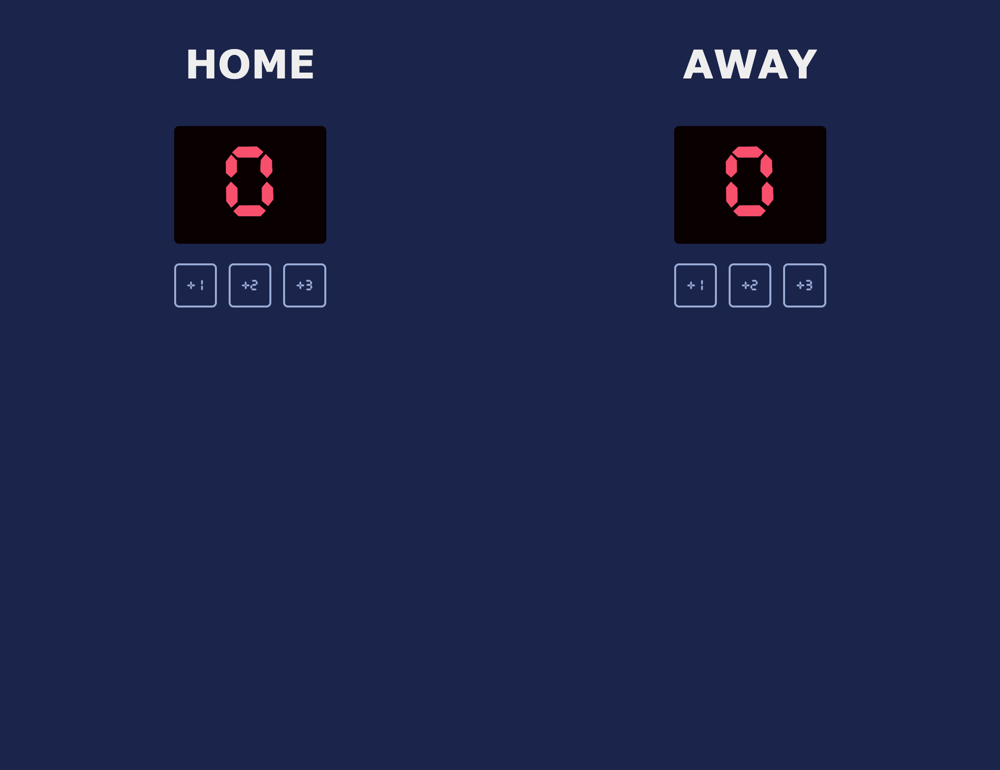

← Zurück zu Projekten

Überblick
Eine kompakte Scoreboard-App, entwickelt zum Üben von JavaScript-Ereignisbehandlung, numerischer Zustandsaktualisierung und einfacher interaktiver UI-Steuerung.
Was ich gebaut habe
Punktesteuerung
Erstellung von Steuerelementen zur Punkteerhöhung und zur sofortigen Aktualisierung der angezeigten Werte in der Oberfläche.
UI-Zustand
Verwendung von JavaScript-Variablen und DOM-Rendering, um das visuelle Scoreboard mit dem aktuellen Punktestand synchron zu halten.
Deployment
Verbindung des GitHub-Projekts mit Netlify, damit jede Version als Live-Web-App veröffentlicht werden kann.
Tools & Technologien
- JavaScript für die Punktelogik
- HTML und CSS für Layout und Gestaltung
- GitHub für Versionskontrolle
- Netlify für Hosting